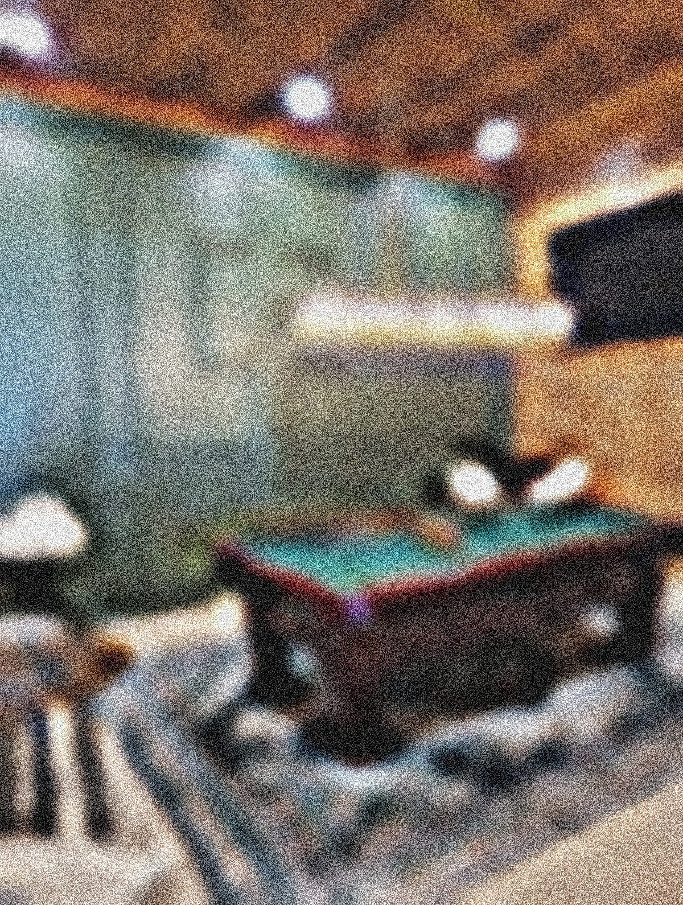
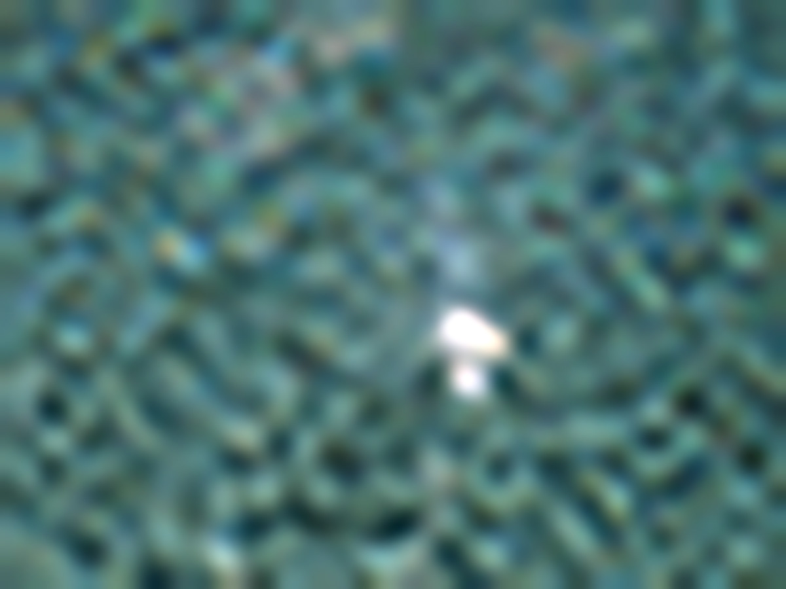

When resolution collapses, texture becomes visible. Smooth gradients turn into blocks, and the illusion of perfection fractures. Pixelation exposes the structure underneath the image. Instead of hiding flaws, distortion turns them into form.
Digital noise feels aggressive but also honest. Compression artifacts create patterns that were never intended. The glitch becomes the brushstroke. What looks broken begins to function as design.

